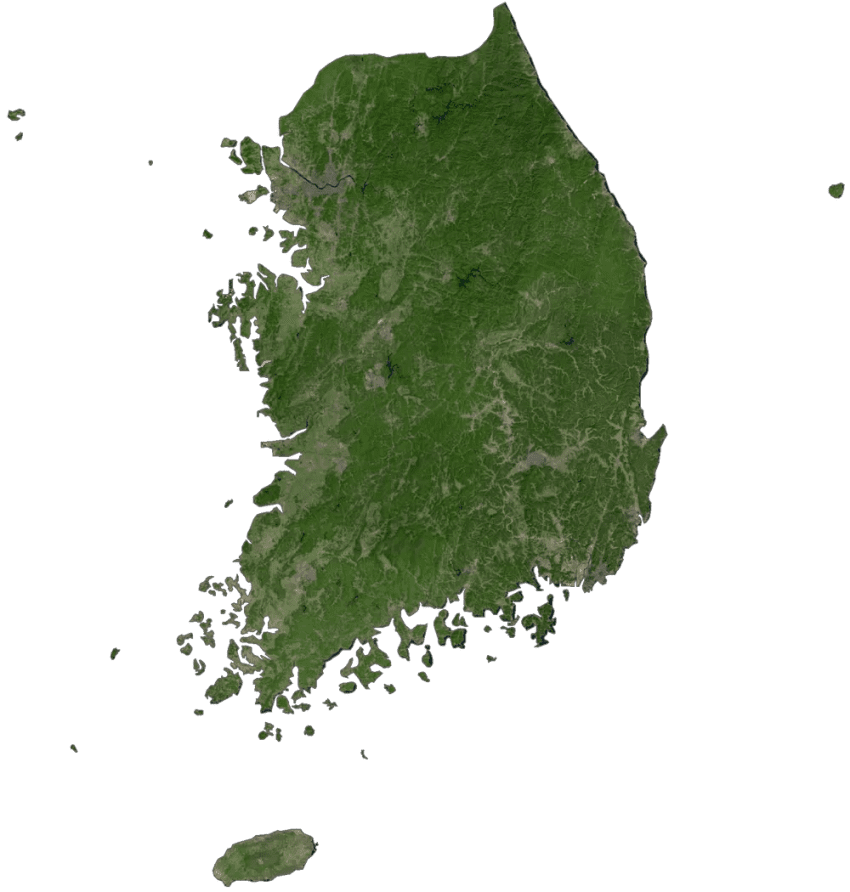

대한민국
선진국한테는 우리가 그래도 저새끼 보단 낫지 ㅋㅋㅋ
이 취급이고
후진국들한텐 우리도 열심히 하면 저새끼는 제치는거 가능 ㅋㅋㅋ
이 취급 받음
그냥 전세계 전투력 측정기임

대한민국
선진국한테는 우리가 그래도 저새끼 보단 낫지 ㅋㅋㅋ
이 취급이고
후진국들한텐 우리도 열심히 하면 저새끼는 제치는거 가능 ㅋㅋㅋ
이 취급 받음
그냥 전세계 전투력 측정기임
기어이 북진통일 성공한 멀티버스로
한반도 온전히 다 가진채로 냉전 때 경제발전 달렸으면
어땠을지 궁금하네 …
북진 통일했으면 국사력 외엔 지원을 못받을 가능성이 컸다 봄 그냥 육군국방이 비대한 군사국가였을듯
선진국은 뭐 그러려니 하는데 지금 후진국 선진국.차이는 넘을 수 없는 수준의 벽에 가깝지 않나
동남아 국가들이 우리가 저새끼는 딴다. 이런 마인드 라는게 웃기지 특히 베트남.
이번에 2조 슈킹한거 보면 비리 쪽은 우리나라 넘어서기 어렵지 않을 듯
선진국의 수문장
이번 삼전 하닉 캐리로 많이 올라갔자너
긴 노동시간과 과도한 경쟁으로 인한 자살율 그리고 노인빈곤
가만히 생각해보면 우리나라가 살기좋다는 얘기 나오는 것들도 다 사람갈아넣어서 만들어지고 유지되는거지
우리나라는 살기는 좋은나라가 맞지만 노동자로 살기엔 매우 고달픈 나라임
노동자로 살기엔 고달픈나라라고 하지
너 자영업해봄? 자영업해보면 노동자보다 내 노동력 더 갈아도넣어도 노동자시절보다 못버는 자영업자도 많다..
노동자가 살기 좋다는 근거를 대야지 더 밑바닥이 있다 도르 해봤자
다른나라 보다 노동권이나 환경 좋은 박은게 팩트라서 둘다 안좋다로 귀결될 뿐임
한국이 얼마나 고트인데 너 한국 무시해???
선진국 수문장
최빈국에서 선진국까지 올라온 유일한 케이스.
거기다가 걸린기간 끽해야 백년 미만.
한세대 안에서 개도국과 선진국경험이 공존하는 유일무이한 사례니 ㅋㅋ
세대갈등이 심할 수 밖에 없는 이유 ㅋㅋ
미승인국까지 포함해서 경제 순위 150개국 중 전쟁 직후 100위 쯤에 있던 국가가 상위 10등 까지 올라온 건 기록된 인류사에서 한국 밖에 없음. 그래서 비교하면 다 한국이랑 비교함
사실상 로우바둑좌
그런데 일시적이나마 독일 +일본을 따버린...
자의식 과잉인데 이건
전투력측정기 딱 알맞은 포지션 설명이다ㅋㅋㅋㅋㄹㅇ
선진국 수문장이니 뭐 ㅋㅋㅋㅋ
땅 꼬라지 봐라. 죄다 산이네. 그럼 산 파면 뭐가 나기라도 하냐? 아무것도 안나와~
무근본 무논리 억지 혐한 하는 나라들이 늘어난건 좀 어이없긴함
경기도 충청도가 평야였으면 어떘을까
근데 뭐 우리도 딱 저렇게 생각하는데 뭐 ㅋㅋㅋㅋ
이거 완전 제국주의 시절 이탈리아 포지션...
선짓국 수문장임
중국이란 나라가 사다리 다걷어참 이제 못올라옴
좆밥같아 보이는데 덤벼보면 아득히 멀어보임
산 존나 많긴하네 ㅋㅋㅋㅋㅋ
저러니까 물 깨끗하지